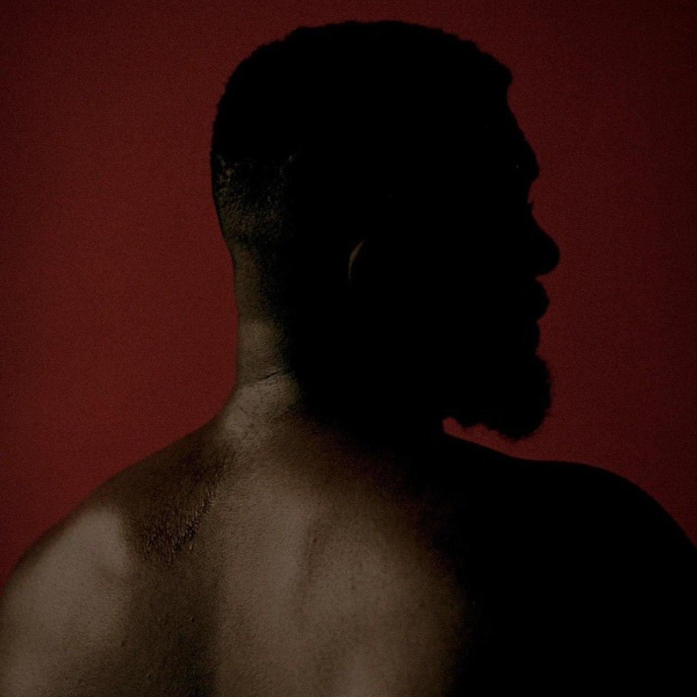
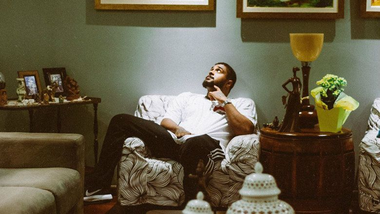

Baco O Exu Do Blues

Diogo Álvaro Ferreira Moncorvo, mais conhecido como Baco Exu do Blues, é um rapper, cantor e compositor brasileiro.
Nascimento: 11 de janeiro de 1996 (idade 26 anos), Salvador, Bahia
Gênero: Hip-Hop/rap

Baco ja conta com 4 álbum de estúdio. "QVVJFA?", "Bluesmans", "Não Tem Bacanal Na Quarentena" e "Esú".
com quase 3 milhões de ouvintes mensais, baco vem crescendo cada vez mais no Brasil, na área de hiphop, rap e blues.
abaixo deixei links de suas músicas mais famosas.
como: "desculpa jay z","Flamingos", e "Samba In Paris - feat, Glória Groove.
Gostou do que viu sobre Baco Exu Do Blues? coloquei alguns links abaixo caso queira se aprofundar!